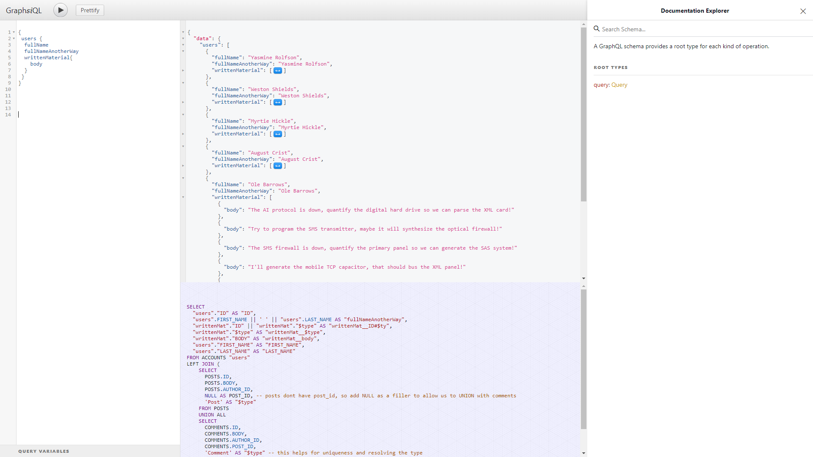

OracleDB, GraphQL, Docker, & Cloud
Learning Materials for exploring OracleDB & GraphQL
explore the worlds top database, flexible APIs, and docker
Get started with GraphQL, Oracle Database, and Docker Click "Get Started" below to walk through the documentation.
Head to our about page for information on the author and the related webcast
Get Started